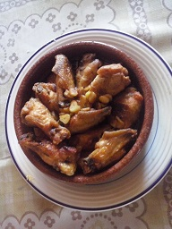
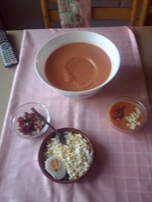
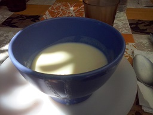
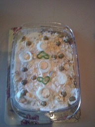

Inicio
contacto
Los platos del abuelo
La mejor web de recetas de cocina tradicional .Recetas de Entrantes
Croquetas con bacalao
Alitas de pollo al ajillo

Salmorejo

Vichyssoise

Ensaladilla rusa

Huevos rellenos